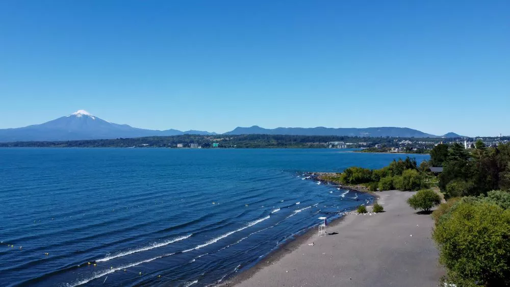

Atardecer en el Lago Villarrica

Desde la costanera de Villarrica se puede disfrutar de uno de los atardeceres más fotografiados de la región, con el volcán Villarrica reflejado en las aguas calmas del lago. Un momento perfecto para caminar o cerrar el día después de recorrer la ciudad.
Ubicación: Villarrica, Chile
Duración: 1 hora
Volver